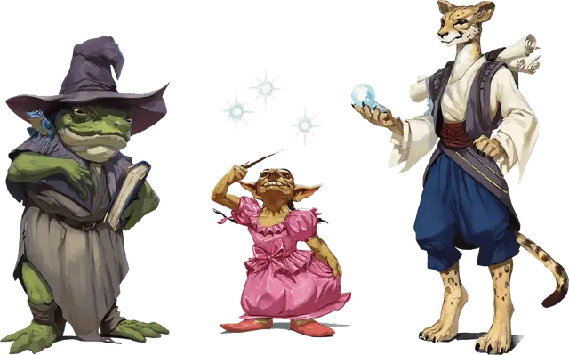

Заклинатель
Spellcaster Sidekick
Класс напарника

| Уровень | Бонус мастерства | Умения | Известные заговоры | Известные заклинания | Ячейки заклинаний на уровень заклинаний | ||||
|---|---|---|---|---|---|---|---|---|---|
| 1 | 2 | 3 | 4 | 5 | |||||
| 1 | +2 | Бонусные владения, Использование заклинаний | 2 | 1 | 2 | — | — | — | — |
| 2 | +2 | — | 2 | 2 | 2 | — | — | — | — |
| 3 | +2 | — | 2 | 3 | 3 | — | — | — | — |
| 4 | +2 | Увеличение характеристик | 3 | 3 | 3 | — | — | — | — |
| 5 | +3 | — | 3 | 4 | 4 | 2 | — | — | — |
| 6 | +3 | Могущественные заговоры | 3 | 4 | 4 | 2 | — | — | — |
| 7 | +3 | — | 3 | 5 | 4 | 3 | — | — | — |
| 8 | +3 | Увеличение характеристик | 3 | 5 | 4 | 3 | — | — | — |
| 9 | +4 | — | 3 | 6 | 4 | 3 | 2 | - | — |
| 10 | +4 | — | 4 | 6 | 4 | 3 | 2 | — | — |
| 11 | +4 | — | 4 | 7 | 4 | 3 | 3 | — | — |
| 12 | +4 | Увеличение характеристик | 4 | 7 | 4 | 3 | 3 | — | — |
| 13 | +5 | — | 4 | 8 | 4 | 3 | 3 | 1 | — |
| 14 | +5 | Усиленные заклинания | 4 | 8 | 4 | 3 | 3 | 1 | — |
| 15 | +5 | — | 4 | 9 | 4 | 3 | 3 | 2 | — |
| 16 | +5 | Увеличение характеристик | 4 | 9 | 4 | 3 | 3 | 2 | — |
| 17 | +6 | — | 4 | 10 | 4 | 3 | 3 | 3 | 1 |
| 18 | +6 | Увеличение характеристик | 4 | 10 | 4 | 3 | 3 | 3 | 1 |
| 19 | +6 | — | 4 | 11 | 4 | 3 | 3 | 3 | 2 |
| 20 | +6 | Фокусированное колдовство | 4 | 11 | 4 | 3 | 3 | 3 | 2 |
Описание
Классы напарников являются инструментом Мастера на тот случай, если неигровому персонажу второстепенного плана, что путешествует вместе с персонажами игроков, необходимо дать классовые умения. Имейте в виду: этот и другие классы напарников заведомо слабее классов из «Книги игрока». Общую статью о напарниках вы можете отыскать в этой статье.
— Господин Финик
Напарник, который становится заклинателем, выбирает для себя тропу магии. Он может быть тайным волшебником, священником, прорицателем, фокусником или кем-то с магией, текущей в его крови.
Чтобы получить класс заклинателя, существо должно иметь по крайней мере один язык в своём блоке статистики, на котором оно может говорить. Напарник получает нижеперечисленные умения класса по мере продвижения в уровнях, как показано в таблице «Заклинатель».
Уровень 1: Бонусные владения
1-й уровень, умение заклинателя
Кроме того, напарник получает владение двумя навыками по вашему выбору из следующего списка: Выступление, История, Магия, Медицина, Проницательность, Расследование, Религия или Убеждение.
Напарник получает владение лёгкими доспехами, и, если он гуманоид или имеет простое или воинское оружие в своём блоке статистики, он также получает владение всеми видами простого оружия.
Уровень 1: Использование заклинаний
1-й уровень, умение заклинателя
Напарник получает возможность использовать заклинания. Если существо уже обладает особенностью «Использование заклинаний», то текущее умение заменяет эту особенность. Так же правила по использованию заклинаний есть в этой статье: использование заклинаний.
Выберите роль заклинателя: маг, целитель или вундеркинд. Этот выбор определяет список заклинаний и базовую характеристику заклинаний, используемые напарником, как показано в таблице «Использование заклинаний» ниже.
Использование заклинаний
| Роль | Список заклинаний класса | Базовая характеристика заклинаний |
| Маг | Волшебник | Интеллект |
| Целитель | Жрец и друид | Мудрость |
| Вундеркинд | Бард и колдун | Харизма |
Ячейки заклинаний. Таблица «Заклинатель» показывает, сколько доступных ячеек напарник имеет для наложения своих заклинаний 1-го уровня и выше. Для накладывания заклинания напарник должен потратить ячейку соответствующего либо более высокого уровня.
Напарник восстанавливает все потраченные ячейки заклинаний после завершения продолжительного отдыха.
Известные заклинания. Напарник знает два заговора и одно заклинание 1-го уровня по вашему выбору из своего списка заклинаний. Для заклинателей 1-го уровня рекомендуется использовать следующие заклинания:
Маг: волна грома [thunderwave], волшебная рука [mage hand], луч холода [ray of frost].
Целитель: лечение ран [cure wounds], священное пламя [sacred flame], указание [guidance].
Вундеркинд: лечащее слово [healing word], мистический заряд [eldritch blast], свет [light].
Колонки «Известные заговоры» и «Известные заклинания» таблицы «Заклинатель» показывают, когда напарник получает новые заклинания на ваш выбор. Каждое из заклинаний, количество которых показано в столбце «Известные заклинания» должно иметь круг, который соответствует тем ячейкам заклинаний, которые есть у напарника, как показано на таблице.
Например, когда напарник достигает 5-го уровня в этом классе, он может выучить одно новое заклинание 1-го или 2-го уровня, но не может выучить заклинание 3-го уровня. Кроме того, когда напарник получает новый уровень в этом классе, вы можете выбрать одно из заклинаний, которое он знает и заменить его другим заклинанием из его списка заклинаний. Новое заклинание должно быть заговором или иметь такой уровень, ячейки заклинаний которого есть у напарника.
Базовая характеристика заклинаний. Базовая характеристика заклинаний напарника зависит от того, что вы выбрали в таблице «Использование заклинаний». Напарник использует свою базовую характеристику заклинаний всякий раз, когда заклинание ссылается на эту характеристику.
Кроме того, он использует свой модификатор заклинательной характеристики при установке Сл спасброска для заклинания, которое он накладывает, и для бросков атаки.
Сл спасброска = 8 + бонус мастерства напарника + модификатор базовой характеристики заклинаний
Модификатор атаки заклинаний = бонус мастерства напарника + модификатор базовой характеристики заклинаний
Заклинательная фокусировка. Напарник может использовать фокусировку для своих заклинаний в зависимости от выбора, который вы сделали в таблице «Использование заклинаний». Маг может использовать магическую фокусировку, целитель может использовать священный символ, а вундеркинд может использовать магическую фокусировку или музыкальный инструмент.
Уровень 4: Увеличение характеристик
4-й уровень, умение заклинателя
На 4-м, 8-м, 12-м, 16-м и 18-м уровнях напарник повышает значение одной из характеристик по вашему выбору на 2 или двух характеристик по вашему выбору на 1. Значение повышаемой характеристики напарника не может стать выше 20 с использованием этого умения.
Уровень 6: Могущественные заговоры
6-й уровень, умение заклинателя
Уровень 14: Усиленные заклинания
14-й уровень, умение заклинателя
Выберите одну школу магии. Всякий раз, когда напарник использует заклинание этой школы, используя ячейку заклинаний, он может добавить свой модификатор базовой характеристики заклинаний к броску урона или исцеления заклинания.
Уровень 20: Фокусированное колдовство
20-й уровень, умение заклинателя
Получение урона не прерывает концентрацию напарника на заклинании.